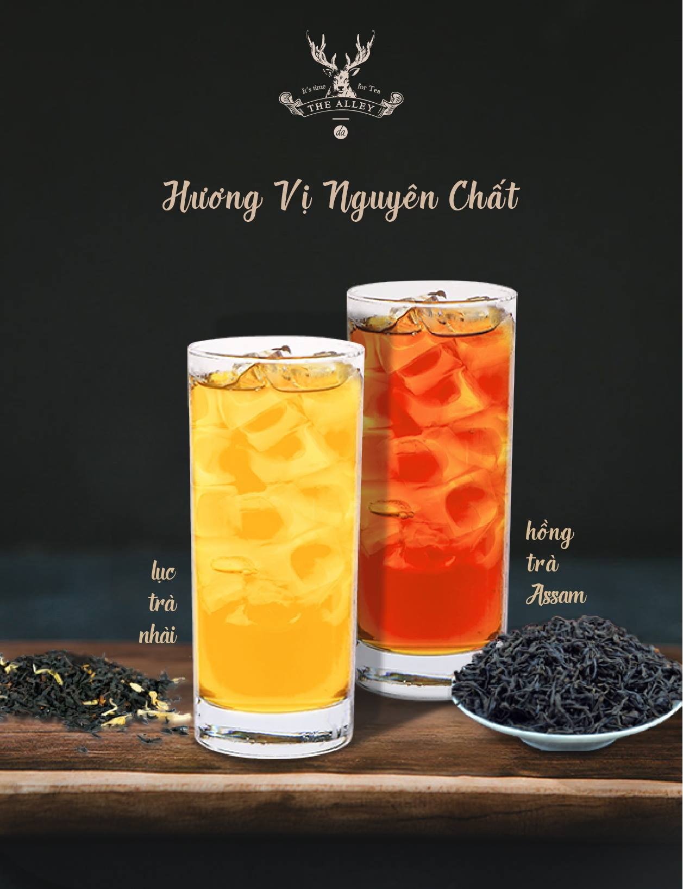
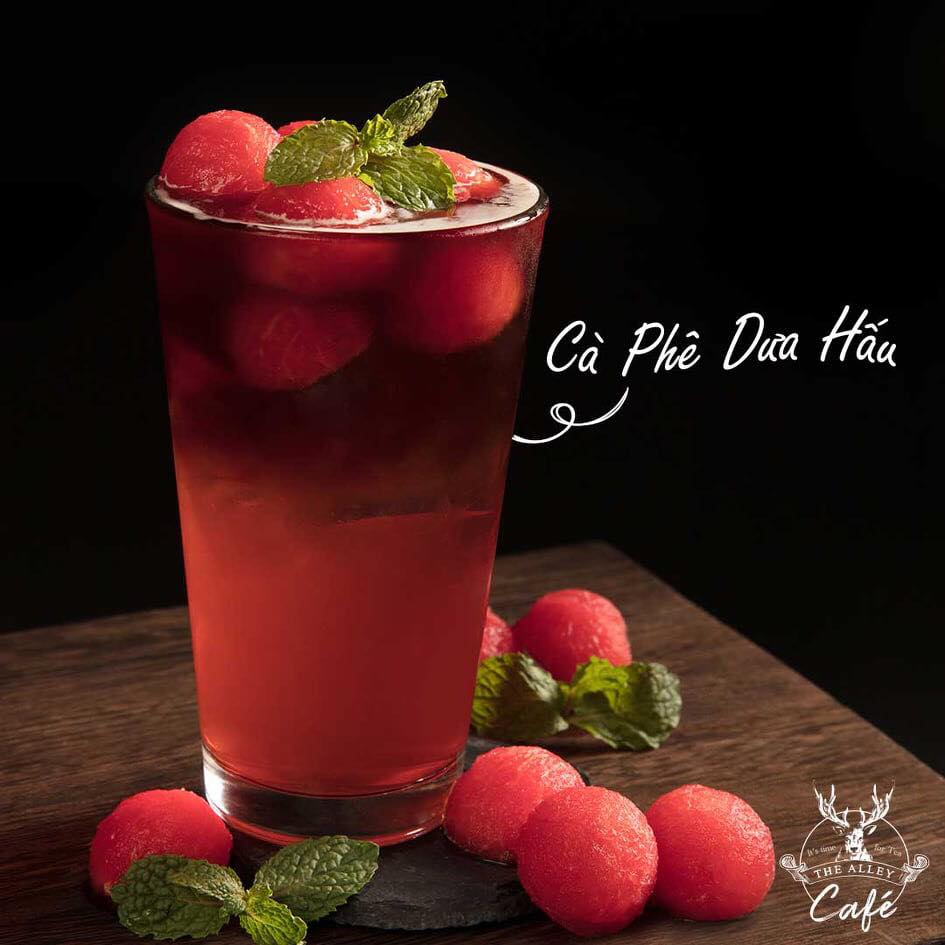
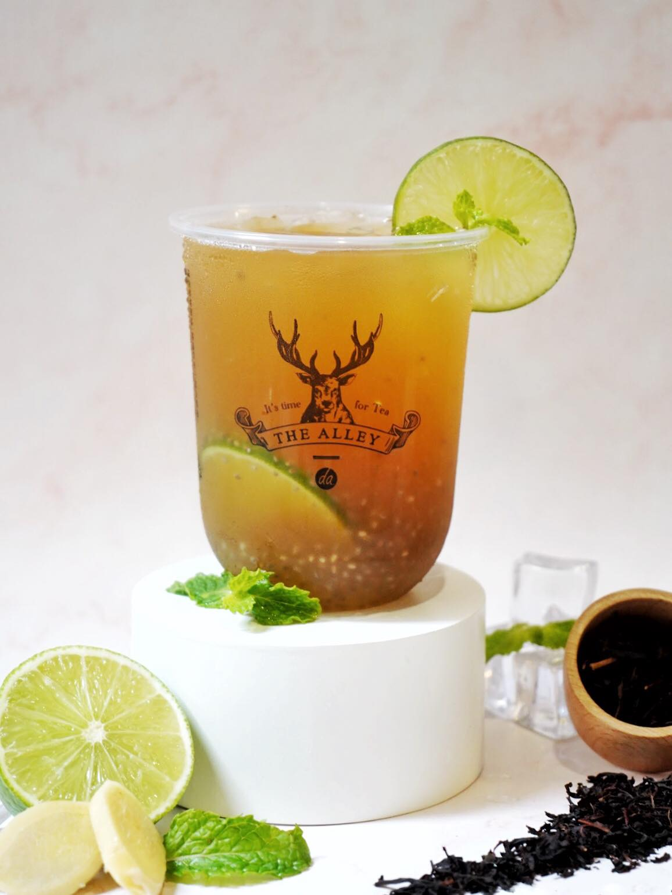
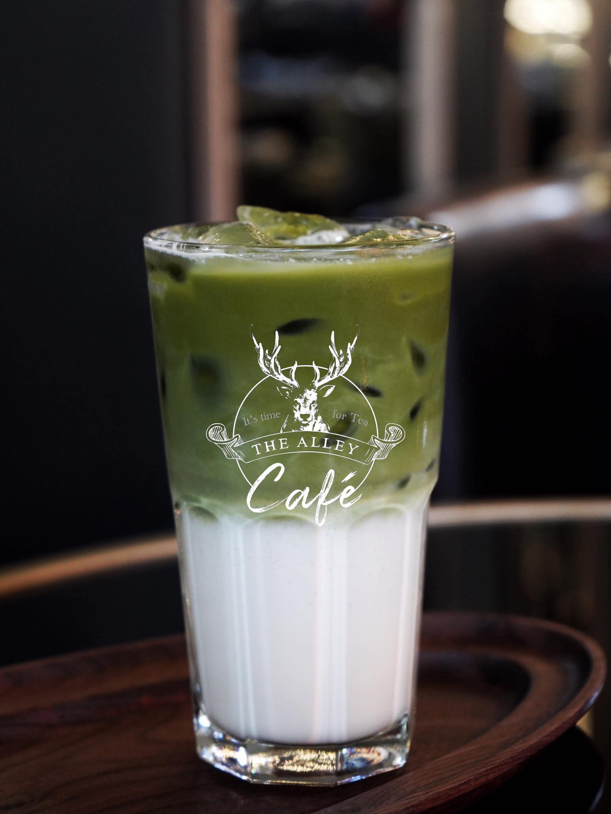
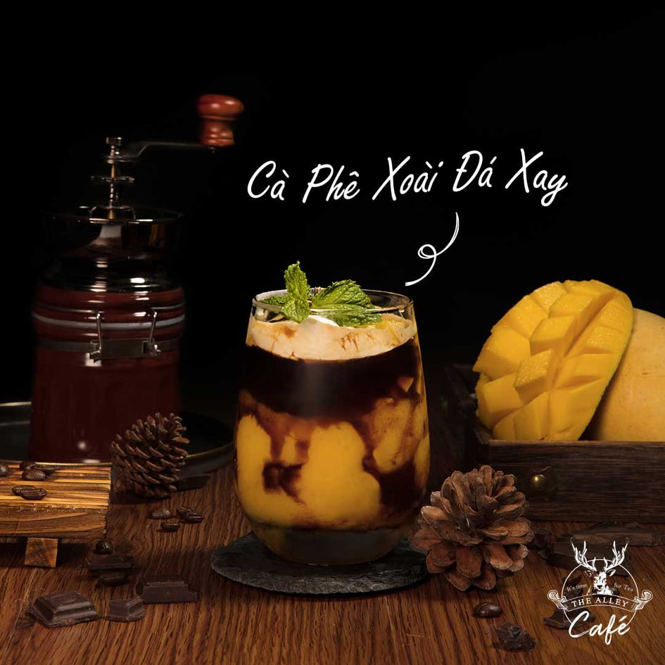
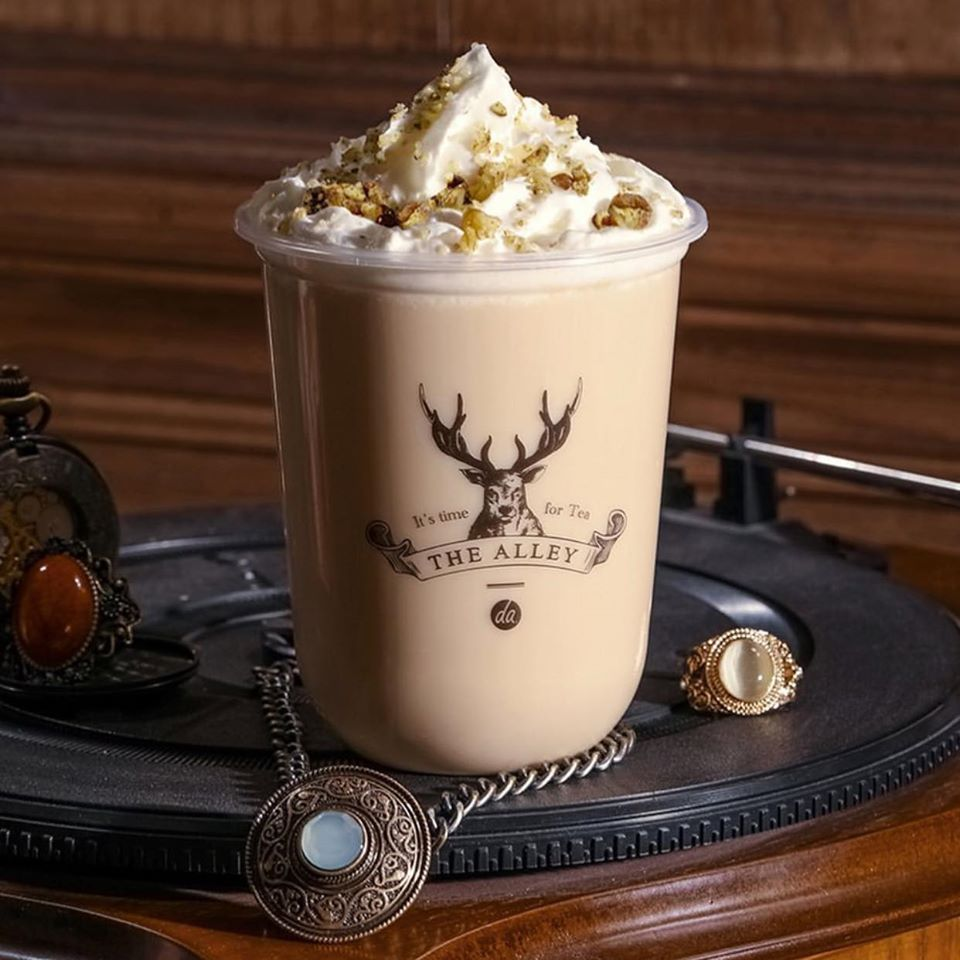

お茶の時間です！
TheAlleyのドリンクは、あなたの人生に素晴らしい物語をもたらします。 良い思い出を今すぐ確認しましょう！ 経験を通じた大小の計画... あらゆる努力によって、私たちは人生と創造性を結び付けます 文化的および芸術的なイベントに専念し、 暖かく居心地の良いデザインを開発し、 人生で素晴らしい感情的な瞬間を達成するために。
純粋な味
独特の風味「紛れもない」、茶葉の香りがそのまま残っているように見えるので、それは常に新しい経験をもたらしています-自然の生きた後味。 それに加えて、ボディクレンジング、アンチエイジング、ガン予防などの健康ドリンクの一種でもあります。 しかし、それは人々がお茶を恐れるこれらの純粋なもののためです...
スイカコーヒー
ウォーターメロンコーヒーのちょっとした涼しさが、 サイゴンの午後の暑さを分散させます フルーツコーヒーの苦味と少し変わった味を逃した場合は、 The Alley Coffeeに立ち寄り、感じてみてください。
特別な
レモン、レモングラス、ジンジャー、ジャスミンの完璧な組み合わせは、 すべてのストレスや疲労を和らげる爽やかなおいしい飲み物を作り出し、 多くの健康上の利点をもたらします。特別なデトックスシリーズ。
抹茶
あなたが抹茶の豊かな味と香りを愛しているなら、あるいはそれ以上に、あなたは昇る太陽の土地、その神秘的な素材の土地に恋をしています。 The Alley Coffeeに行き、 高級抹茶パウダーとミルクを混ぜて作った抹茶ラテを体験してください。.
マンゴーコーヒーアイスブレンド
マンゴーアイスブレンドコーヒーはいかがですか？マンゴーの魅力的なアロマ、コーヒーのわずかな苦味と甘さの組み合わせ、 飲み物は2つの異なる感情をもたらしますが、組み合わせると「うなずき」ます。
クルミ生クリームハーブ
ダブルクリームミルクとアールグレイティーの混合物から、クルミミルククリームハーブティーは、 飲み物の脂肪を増やすためにクルミをふりかけた滑らかなホイップ層で完成します。 健康に良いだけでなく、そのストレスの多い週に正気をもたらすにはまだ十分です、今すぐ注文してください！